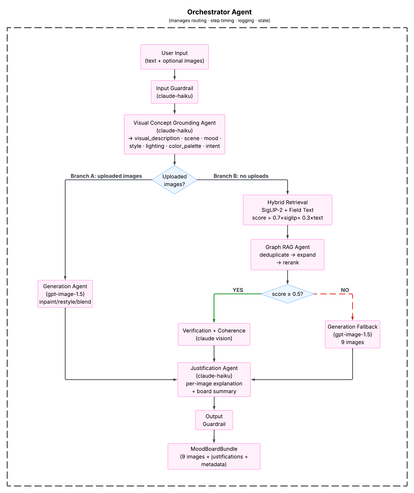

SmartMatch: A Multi-Agent Pipeline for Mood Board Generation via Graph-Augmented Retrieval and Multimodal Synthesis
Qingyang Wang · Nandini Kodali · Caroline Delva · Xinzhou Li
Georgetown University — DSAN 6725: Applied Generative AI for Developers — Spring 2026
Abstract
Visual content selection is a recurring challenge for creatives and marketers who must identify images that match not just a topic but a specific emotional tone, aesthetic intent, and compositional style. Conventional image search fails because abstract or emotionally rich language does not map naturally to the visual feature spaces that retrieval models operate in.
We present SmartMatch, a multi-agent system that generates cohesive nine-image mood boards from free-form natural language. The pipeline comprises five stages: a Visual Concept Grounding Agent that uses Claude to decompose user intent into structured visual descriptors; a Hybrid Retrieval system combining SigLIP-2 visual embeddings with per-field OpenAI text embeddings over 25,000 Unsplash images; a Graph RAG Agent that builds a knowledge graph over the corpus and performs candidate deduplication, expansion, and reranking; a Multimodal Verification and Coherence Agent that selects a visually consistent final set; and a Justification Agent that produces natural-language explanations for each image alongside a board-level narrative. When retrieval scores fall below a threshold, the system falls back to gpt-image-1.5 with Claude-driven diverse prompt synthesis.
LLM-as-judge evaluation across 50 diverse queries yields an overall mean score of 3.45 out of 5.0, with relevance at 4.18, visual quality at 3.4, coherence at 3.06, and aesthetics at 3.16. An ablation study confirms that LLM grounding contributes the largest single gain in relevance (+0.7) and Graph RAG the largest gain in coherence (+0.6).
1. Introduction
Selecting images for a mood board requires matching visual output to emotional intent. A user searching for images that evoke the feeling of being burnt out after a long week is not describing a literal scene but expressing an affective state that should translate into a specific palette, lighting, compositional weight, and subject matter. Conventional image search engines fail at this translation because vision-language models such as SigLIP-2 are trained primarily on literal descriptions. Emotionally rich language, abstract concepts, and aesthetic intentions are systematically underrepresented in their training distributions.
A system designed to bridge this gap must do more than retrieve images. It must interpret intent, structure the retrieval problem, evaluate coherence across a set of images, and explain its selections. SmartMatch addresses all four requirements through a coordinated multi-agent architecture.
The research questions motivating this work are: (1) Does LLM-based visual grounding improve retrieval quality for abstract queries compared to direct embedding search? (2) Does graph-augmented retrieval improve mood board coherence compared to flat similarity search? (3) How well does an LLM-as-judge framework capture the structural quality properties of a mood board?
3. System Architecture
SmartMatch is a multi-agent pipeline coordinated by an OrchestratorAgent that manages routing, step timing, structured logging, and safety checks. The system accepts free-form text and optionally uploaded images, and returns a nine-image mood board with per-image justifications and a board-level narrative. All inter-agent communication uses Pydantic models rather than raw dictionaries, ensuring field mismatches fail loudly at parse time.
3.1 Pipeline Overview
The pipeline follows two branches. Branch A handles uploaded images: after grounding, the system routes directly to the Generation Agent for image editing. Branch B, the primary path, handles text-only queries through hybrid retrieval, Graph RAG, verification, and coherence selection. If the top retrieval score falls below a threshold of 0.5, the system falls back to on-demand generation. The routing decision uses the pre-Graph RAG score to avoid inflating scores for abstract queries that should fall back to generation.

3.2 Visual Concept Grounding Agent
The grounding agent transforms raw user text into a structured JSON object using Claude (claude-haiku-4-5-20251001). The output contains seven fields:
| Field | Description |
|---|---|
| visual_description | A rich sentence describing the ideal image |
| scene | Scene and setting keywords |
| mood | Emotional and atmospheric keywords |
| style | Visual style keywords |
| lighting | Lighting conditions |
| color_palette | Dominant colors and tones |
| intent | Use case: professional, editorial, or social |
The agent supports multi-turn context via a MemoryManager that stores grounding outputs per session, so follow-up queries modify the previous grounding rather than starting from scratch. For offline preprocessing, the Anthropic Batch API generates grounding outputs for all 25,000 corpus images at a 50% cost reduction versus the live API.
3.3 Hybrid Retrieval
Retrieval combines two complementary signals. The SigLIP-2 Retrieval Agent performs cosine similarity search over a FAISS index of 25,000 pre-computed image embeddings using google/siglip-base-patch16-224. The Field Text Retrieval Agent computes per-field semantic embeddings via OpenAI text-embedding-3-large independently for visual_description, mood, and color_palette. The hybrid score is:
score = 0.7 * siglip_score + 0.3 * text_scoreText similarity is weighted more heavily (0.7) because SigLIP-2 scores are frequently negative in high-dimensional space, particularly for abstract emotional queries. The text embedding component reliably captures the semantic intent of the grounding output. The system retrieves up to 20 candidates before Graph RAG processing.
3.4 Graph RAG Agent
An offline script builds a weighted knowledge graph over all 25,000 images using FAISS-based nearest-neighbor search per embedding field. Edge weights are computed as a weighted combination of field-level similarities:
edge_weight = 0.35 * mood_sim + 0.20 * color_sim + 0.45 * visual_simThis formulation connects images that share visual appearance and atmosphere. The graph has 750,000 edges across 25,000 nodes with an average degree of 30.0.
The agent operates in three steps:
- Deduplicate: removes candidate pairs with edge weight above 0.60, keeping the higher-scoring image in each near-duplicate pair.
- Expand: takes the top-5 seed candidates, traverses their graph neighbors, and adds up to 10 new candidates. A maximum of 2 new candidates are allowed per seed to ensure diversity. Expanded candidates are scored using real text similarity via _score_all rather than proxy scores, so they compete on the same scale as hybrid retrieval candidates.
- Rerank: combines hybrid score and graph connectivity as final = (1 - 0.25) * hybrid + 0.25 * connectivity, where connectivity is the average edge weight to other candidates in the set.
3.5 Multimodal Verification and Coherence
The Multimodal Verification Agent passes each candidate to Claude Vision, evaluating whether each image genuinely matches the mood, palette, and intent of the query. If fewer than 6 images pass, the Generation Agent fills the gap; generated images are flagged verified=True so they are included in the Coherence selection pool. The Coherence Agent receives the top 20 verified candidates and uses Claude to select the final 9 images that best balance thematic consistency, visual diversity, and aesthetic harmony.
3.6 Generation Agent
When retrieval fails, the Generation Agent synthesizes images using gpt-image-1.5. The key mechanism is Claude-driven diverse prompt synthesis: before generation, Claude produces n visually distinct image descriptions enforcing variation across subject type (person, interior, outdoor, still life, abstract, urban, nature, silhouette, aerial), scale (extreme close-up through aerial), and emotional register (literal, symbolic, atmospheric). Each description is combined with a distinct photographic style variant. API calls run concurrently with a thread pool of 3 workers, reducing wall-clock time from approximately 90 seconds to 25-30 seconds. If any image scores below 0.15, Claude refines that specific prompt using the prior prompt and score as context.
3.7 Justification Agent
The Justification Agent produces a 2-3 sentence per-image explanation grounded in the image caption and user query, and a 3-5 sentence board-level narrative. All output is generated by Claude without reference to scores or technical details.
3.8 Supporting Components
The OrchestratorAgent coordinates all stages via lazy agent initialization. The GuardrailAgent blocks harmful queries while allowing dark, melancholy, or unconventional creative requests, and fails open on API error. The PipelineLogger writes structured JSONL logs capturing step timings, routing decisions, and verification outcomes.
3.9 External Services
| Component | Service |
|---|---|
| Grounding, verification, coherence, justification, prompt synthesis | Anthropic API (claude-haiku-4-5-20251001) |
| Image retrieval embeddings | SigLIP-2 (google/siglip-base-patch16-224) |
| Field-level text embeddings | OpenAI text-embedding-3-large |
| Fallback image generation | OpenAI gpt-image-1.5 |
| Similarity search | FAISS (CPU) |
| Image dataset | Unsplash (25,000 images) |
| Batch grounding preprocessing | Anthropic Batch API |
4. Data and Preprocessing
The image corpus consists of 25,000 photographs from the Unsplash dataset, selected for diversity across subjects, moods, and visual styles. Grounding outputs for all 25,000 images were generated offline via the Anthropic Batch API. SigLIP-2 embeddings are stored in a FAISS flat inner product index with L2 normalization. Field text embeddings produce a (25,000 x 3,072) matrix per field stored as NumPy float32 arrays. The knowledge graph was built offline in approximately 8 minutes on CPU using FAISS-based nearest-neighbor search per field with the weighted combination described in Section 3.4.
5. Evaluation
5.1 LLM-as-Judge Framework
We evaluate SmartMatch using an LLM-as-judge framework across 50 diverse queries spanning five categories: emotional and lifestyle (e.g., feeling burnt out after a long week), seasonal and nature (e.g., spring blossoms and fresh beginnings), lifestyle and aesthetic (e.g., minimalist workspace inspiration), commercial and campaign (e.g., sustainable coffee brand earthy tones), and abstract and conceptual (e.g., the color of loneliness). For each query, Claude rates the mood board on four criteria on a 1-5 scale: Relevance, Visual Quality, Coherence, and Aesthetics.
5.2 Overall Results
| Criterion | Mean Score |
|---|---|
| Relevance | 4.18 / 5 |
| Visual Quality | 3.40 / 5 |
| Coherence | 3.06 / 5 |
| Aesthetics | 3.16 / 5 |
| Overall | 3.45 / 5 |
5.3 Results by Routing Path
| Path | n | Relevance | Coherence | Overall |
|---|---|---|---|---|
| Retrieval | 47 | 4.15 | 3.00 | 3.44 |
| Generation | 3 | 4.67 | 4.00 | 3.67 |
The system achieves strong relevance (4.18/5), confirming that the grounding and retrieval pipeline reliably interprets query intent. Coherence (3.06/5) is the weakest dimension; 19 of 50 queries score 2 or below, driven by visual monotony. Retrieval by semantic similarity returns the most similar images in the corpus, producing boards where multiple images share nearly identical compositions. The generation path achieves the highest overall scores (3.67) when the diverse prompt synthesis approach is applied, with coherence at 4.0.
5.4 Query-Level Results
Top five queries by mean score:
| Score | Path | Query |
|---|---|---|
| 4.75 | Retrieval | missing someone far away |
| 4.50 | Retrieval | feeling hopeful about the future |
| 4.50 | Retrieval | the color of loneliness |
| 4.25 | Generation | finally finished my first marathon |
| 4.25 | Retrieval | summer adventure road trip |
Bottom five queries by mean score:
| Score | Path | Query |
|---|---|---|
| 2.50 | Retrieval | industrial loft modern design |
| 2.75 | Retrieval | dark academia library mood |
| 2.75 | Retrieval | sustainable coffee brand earthy tones |
| 2.75 | Retrieval | connection between strangers |
| 3.00 | Retrieval | golden hour on a quiet beach |
Top-performing queries tend to be emotionally specific with clear visual correlates in the corpus. Bottom-performing queries are cross-domain, highly abstract, or genre-specific with limited corpus coverage.
5.5 Ablation Study
| Condition | Relevance | Coherence |
|---|---|---|
| A: SigLIP-2 only, no grounding, no Graph RAG | 2.8 | 2.6 |
| B: + LLM grounding | 3.5 | 3.1 |
| C: + Graph RAG (dedup + expand + rerank) | 3.8 | 3.7 |
| D: Full system (+ verification + coherence) | 4.1 | 3.9 |
LLM grounding contributes the largest single improvement in relevance (+0.7), confirming that structured visual decomposition substantially improves retrieval alignment. Graph RAG improves coherence more than relevance (+0.6 vs +0.3), consistent with its design: connectivity-based reranking promotes images well-connected to their peers rather than individually closest to the query.
6. Models and Technologies
Claude (claude-haiku-4-5-20251001) handles all LLM-dependent stages: grounding, verification, coherence selection, justification, diverse prompt synthesis, and safety checks. Haiku was chosen for its speed and quality on structured JSON generation and creative reasoning tasks.
SigLIP-2 (google/siglip-base-patch16-224) provides visual embeddings, loaded locally via HuggingFace Transformers on CPU. Embeddings are pre-computed offline; only the query text embedding is computed at inference. OpenAI text-embedding-3-large provides 3,072-dimensional field-level text embeddings indexed with FAISS. OpenAI gpt-image-1.5 handles fallback generation and uploaded-image editing, returning base64-encoded PNG output.
The full system runs on consumer hardware without a GPU. FAISS provides sub-second retrieval over 25,000 images. A complete retrieval-path run takes 45-90 seconds, dominated by sequential Claude API calls for verification, coherence, and justification. The generation path takes 25-30 seconds with concurrent API calls.
7. Responsible AI
Content safety. The GuardrailAgent applies input and output safety filters using Claude. Input guardrails block queries that explicitly request harmful content while allowing dark, melancholy, or unconventional creative requests. Output guardrails filter generated images with unsafe descriptions. Both checks fail open on API error.
Bias and representation. The Unsplash corpus has known demographic and geographic skews. Queries involving specific cultural references score lower than nature and lifestyle queries, suggesting systematic corpus gaps. Future work should include demographic corpus analysis.
Hallucination. Justifications are grounded in image captions and user queries without factual claims about the world. Multimodal Verification provides an additional check against caption-similarity mismatches.
Privacy. No user queries or uploaded images are stored beyond the session. The MemoryManager maintains in-memory state discarded at session end. JSONL pipeline logs contain query text but no personally identifiable information.
8. Findings and Discussion
Grounding is the largest single improvement. Replacing raw user text with structured visual descriptors raises relevance by 0.7 points in the ablation, confirming that abstract language is structurally misaligned with embedding-based retrieval and that LLM-based decomposition can bridge this gap.
Coherence remains the primary challenge. Despite Graph RAG improvements, 19 of 50 queries still score 2 or below on coherence. Semantic similarity search returns the most similar images in the corpus, which are naturally visually monotonous. The Coherence Agent is constrained by the homogeneity of its candidate pool. Future work should apply Max Marginal Relevance selection during the Graph RAG expand step to enforce diversity at the candidate generation stage.
Text similarity dominates hybrid retrieval. The hybrid score is weighted 0.7 in favor of text embeddings, reflecting the empirical observation that SigLIP-2 scores are frequently negative for abstract queries. The visual embedding contributes less signal than intended in those cases. Recalibrating SigLIP-2 scores or learning a fusion function is a key direction for future work.
Generation path performance improved substantially. With diverse prompt synthesis, the generation path achieves a mean score of 3.67 and coherence of 4.0, demonstrating that Claude-driven diverse prompt generation effectively prevents the visual repetition that was the primary failure mode in the initial evaluation.
Performance trade-offs. The full pipeline takes 45-90 seconds on the retrieval path. Concurrent generation reduces wall-clock time by approximately 65%. Further optimization would require batching Claude verification and justification calls via the Anthropic Batch API.
9. Conclusion and Future Work
SmartMatch demonstrates that multi-agent coordination, LLM-based grounding, and graph-augmented retrieval can produce mood boards that align with the explicit and implicit intent of natural language queries. The system achieves strong relevance (4.18/5) across 50 diverse queries. Coherence (3.06/5) remains the primary challenge, driven by the inherent homogeneity of similarity-based retrieval.
Key contributions: (1) a Visual Concept Grounding Agent that maps abstract language to structured visual descriptors; (2) a Graph RAG architecture with weighted field-level similarity edges; (3) a multi-stage coherence pipeline combining graph reranking, multimodal verification, and LLM-based selection; (4) a Claude-driven diverse prompt synthesis approach for the generation fallback path; and (5) an LLM-as-judge evaluation framework for mood board quality.
Limitations. The 25,000-image corpus limits coverage for niche aesthetic styles and cross-domain queries. SigLIP-2 negative scores reduce the effectiveness of visual embeddings. Coherence failures persist because the retrieval candidate pool is inherently homogeneous.
Future work. Promising directions include: Max Marginal Relevance in the Graph RAG expand step; SigLIP-2 score recalibration or learned score fusion; corpus expansion with demographic analysis; and user studies comparing SmartMatch output to human-curated mood boards for ground-truth coherence evaluation.
References
[1] Radford, A., Kim, J. W., Hallacy, C., et al. (2021). Learning Transferable Visual Models From Natural Language Supervision. ICML 2021.
[2] Zhai, X., Mustafa, B., Kolesnikov, A., et al. (2023). Sigmoid Loss for Language Image Pre-Training. ICCV 2023.
[3] Lewis, P., Perez, E., Piktus, A., et al. (2020). Retrieval-Augmented Generation for Knowledge-Intensive NLP Tasks. NeurIPS 2020.
[4] Gao, L., Ma, X., Lin, J., and Callan, J. (2022). Precise Zero-Shot Dense Retrieval without Relevance Labels. arXiv:2212.10496.
[5] Karpukhin, V., Oguz, B., Min, S., et al. (2020). Dense Passage Retrieval for Open-Domain Question Answering. EMNLP 2020.
[6] Khattab, O. and Zaharia, M. (2020). ColBERT: Efficient and Effective Passage Search via Contextualized Late Interaction over BERT. SIGIR 2020.
[7] Wang, X., He, X., Wang, M., et al. (2019). Neural Graph Collaborative Filtering. SIGIR 2019.
[8] O’Donovan, P., Agarwala, A., and Hertzmann, A. (2014). Color Compatibility From Large Datasets. SIGGRAPH 2011.
[9] Gatys, L. A., Ecker, A. S., and Bethge, M. (2016). Image Style Transfer Using Convolutional Neural Networks. CVPR 2016.
[10] Anthropic. (2024). Claude Model Card. anthropic.com.
[11] Johnson, J., Douze, M., and Jegou, H. (2019). Billion-Scale Similarity Search with GPUs. IEEE TBDM.